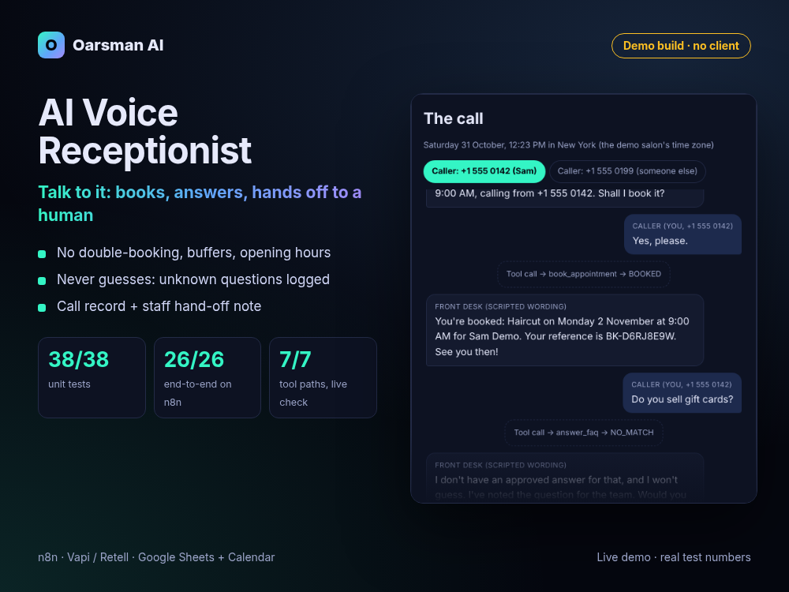

Demo build, no clientReal test numbers
AI Voice Receptionist: books safely, never guesses, hands off cleanly
The booking brain behind a phone receptionist: real availability, no double-booking, FAQ answers only from the owner's list, and a clear hand-off note when a person needs to step in.

Problem
Salons, clinics and trades miss calls while they work. A voice AI can pick up, but the risky part is what happens behind it: booking a slot that is already taken, inventing an answer about prices or policies, letting anyone cancel anyone's appointment, or ending an urgent call without telling a human.
What we built
- Six tools for the voice AI (check availability, book, cancel, answer FAQ, take message, escalate), served by one n8n webhook that reads and writes the owner's Google Sheet.
- Safe booking: opening hours, buffers, minimum notice, blocked times and a re-check at booking time, so a slot taken mid-call is refused with the nearest alternatives. Retried tool calls return the same booking, not a duplicate.
- No guessing: answers only from the owner's FAQ; anything else is logged to FAQ_Gaps and offered as a message.
- Caller checks and hand-off: only the number that booked can cancel; "talk to a person" transfers during staffed hours, otherwise takes an urgent message and alerts the owner.
- After the call: call log with outcome, daily report, Google Calendar mirror and error alerts.
- New in this demo: talk to it with your browser's speech recognition (typing works the same), hear replies, and see the call record and staff hand-off note each call produces.
Result (tests, not client outcomes)
Also: the Vapi setup script passed 10/10 tests against a fake Vapi API. Not tested yet: a real phone call (voice quality, speech recognition on a phone line, how well the AI model follows the prompt), because that needs a paid voice-platform account. There are no client results yet.
Stack
n8nVapi / Retell tool callsGoogle SheetsGoogle CalendarSlack + email alertsLuxon (time zones)Web Speech API (demo only)
Honest notes
- This is our own kit turned into a demo, not client work. Maple Street Salon, its prices and its callers are fictional, with 555 phone numbers.
- The demo runs the kit's real booking engine in the browser. Understanding the caller is done by simple keyword rules written for the demo; in production the voice AI on Vapi or Retell picks the tool. Speech uses your browser's own recognition and voice; no AI model or paid API is called.
- AI tools helped write the code and this page. Every number above comes from our own test reports.